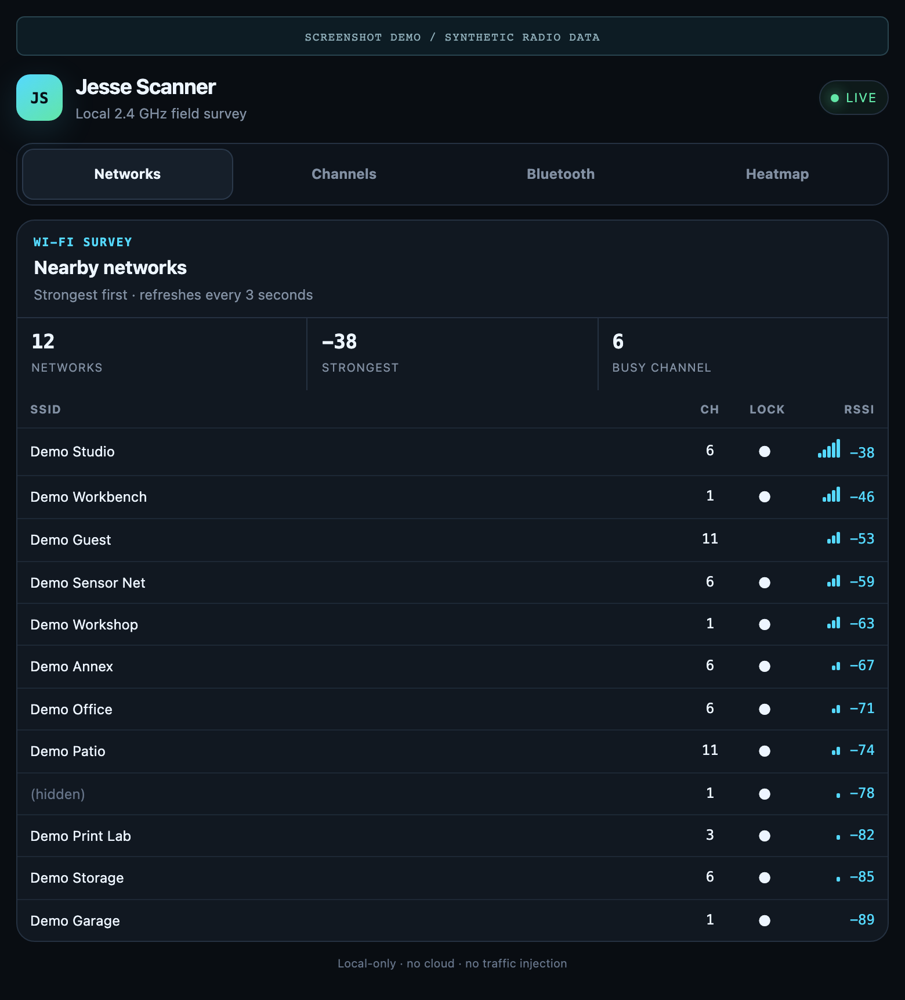
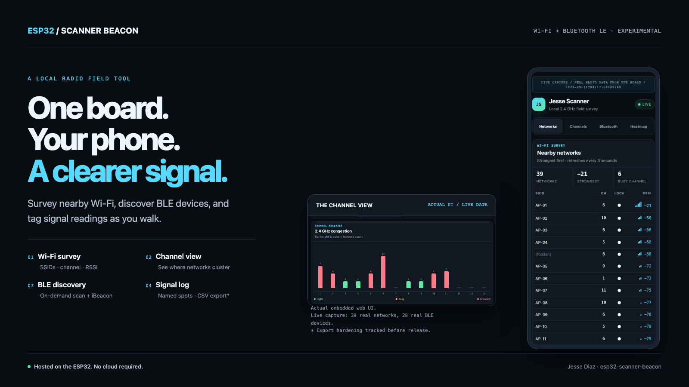
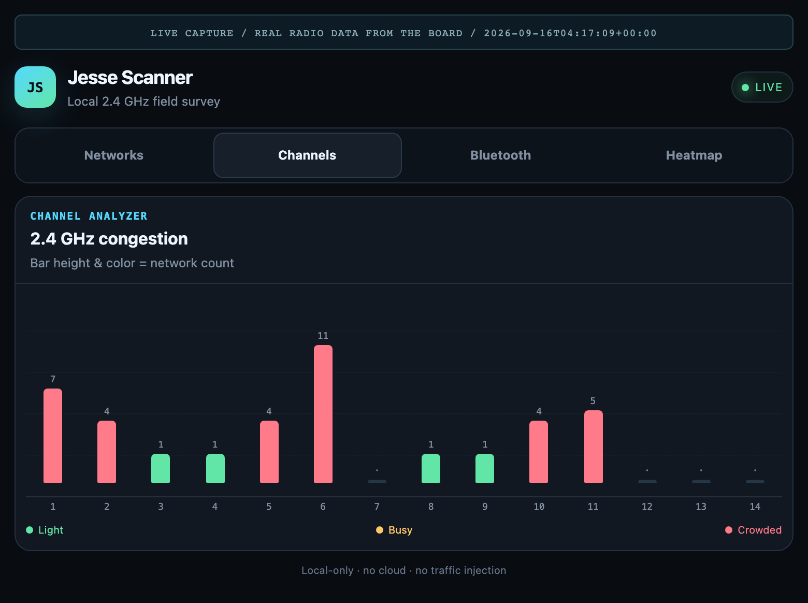
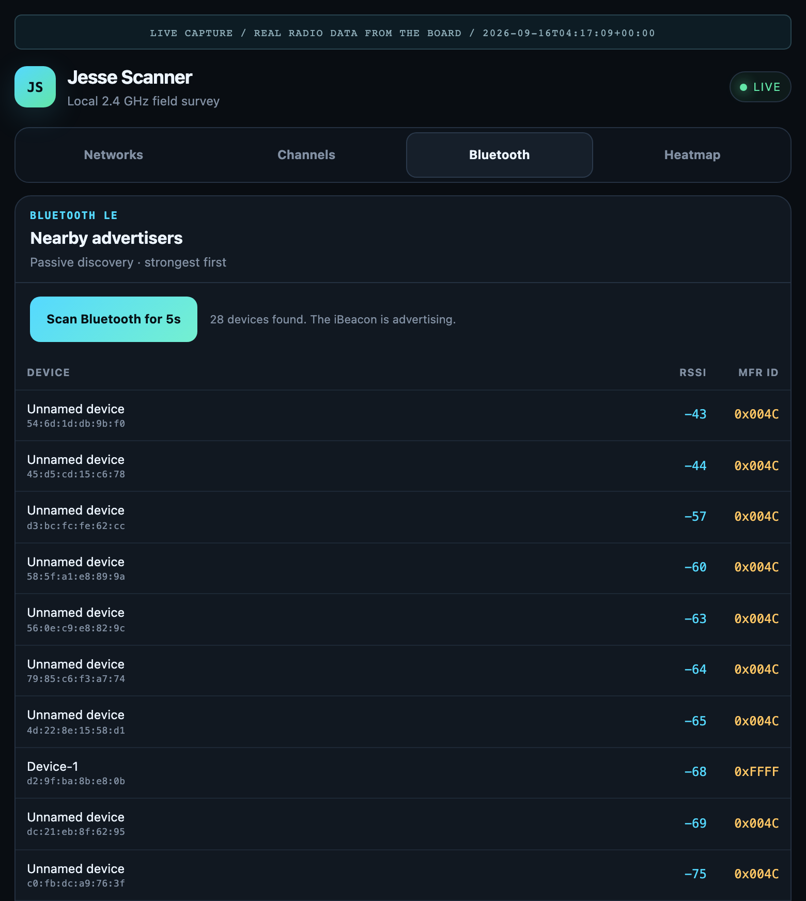
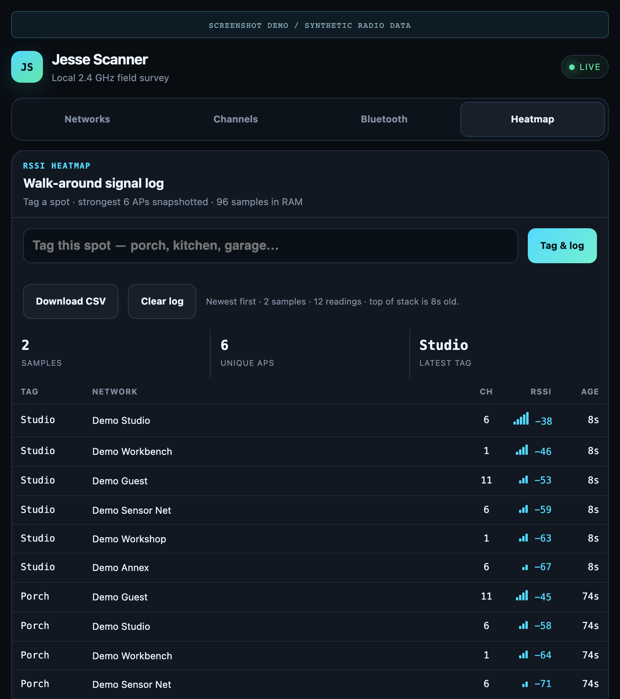

01 / WI-FI
Start with what is in range.
Nearby SSIDs sorted strongest-first, with channel, encryption indicator, and RSSI. The browser polls the board; no cloud service sits in between.
{kind=link}

Actual embedded UI · synthetic dataNetworks

Captured from the firmware's embedded HTML in Chromium. No private network names or device addresses. Click a screenshot to inspect it at full resolution.
Nearby SSIDs sorted strongest-first, with channel, encryption indicator, and RSSI. The browser polls the board; no cloud service sits in between.

A count-based view of observed 2.4 GHz networks. This is a useful first look at channel distribution—not an airtime, noise, or throughput measurement.

Trigger a five-second passive BLE scan. Inspect advertised names, addresses, RSSI, and manufacturer IDs. The board's iBeacon pauses during discovery.

Tag a spot and inspect signal samples from a walk-around survey. This is a RAM-backed log, not a floor-plan map. Firmware capture/export hardening is still required.

Join jesse-scanner and open http://192.168.4.1. The same interface adapts to a phone. View the phone screenshot ↗
The host-side browser checks do not establish live radio, CSV, or OTA reliability. The repository remains pre-release. See release blockers and capture provenance.
{kind=link}
{kind=link}
{kind=link}
{kind=link}